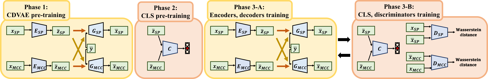

Comments: Submitted to IEEE Transactions on Emerging Topics in Computational Intelligence.
Abstract: An effective approach for voice conversion (VC) is to disentangle linguistic content from other
components in the speech signal. The effectiveness of variational autoencoder (VAE) based VC (VAE-VC), for instance,
strongly relies on this principle. In our prior work, we proposed a cross-domain VAE-VC (CDVAE-VC) framework, which
utilized acoustic features of different properties, to improve the performance of VAE-VC. We believed that the success
came from more disentangled latent representations. In this paper, we extend the CDVAE-VC framework by incorporating
the concept of adversarial learning, in order to further increase the degree of disentanglement, thereby improving
the quality and similarity of converted speech. More specifically, we first investigate the effectiveness of incorporating
the generative adversarial networks (GANs) with CDVAE-VC. Then, we consider the concept of domain adversarial training
and add an explicit constraint to the latent representation, realized by a speaker classifier, to explicitly eliminate
the speaker information that resides in the latent code. Experimental results confirm that the degree of disentanglement
of the learned latent representation can be enhanced by both GANs and the speaker classifier. Meanwhile, subjective evaluation
results in terms of quality and similarity scores demonstrate the effectiveness of our proposed methods.
Proposed framework

Speech Samples
We evaluated our proposed framework on the Voice Conversion Challenge 2018 (VCC 2018) dataset.
[Paper][Datasets]
Specifically, we evaluted on the HUB task, which was a parallel VC task.